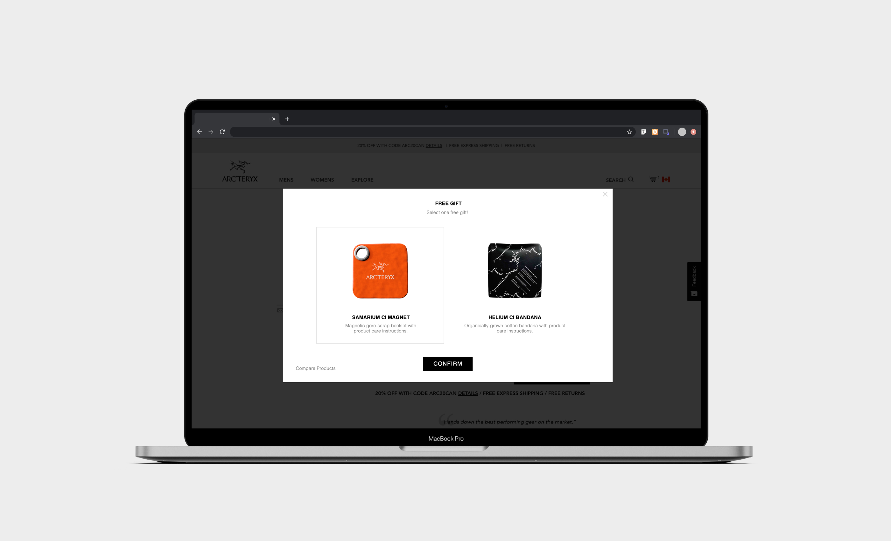
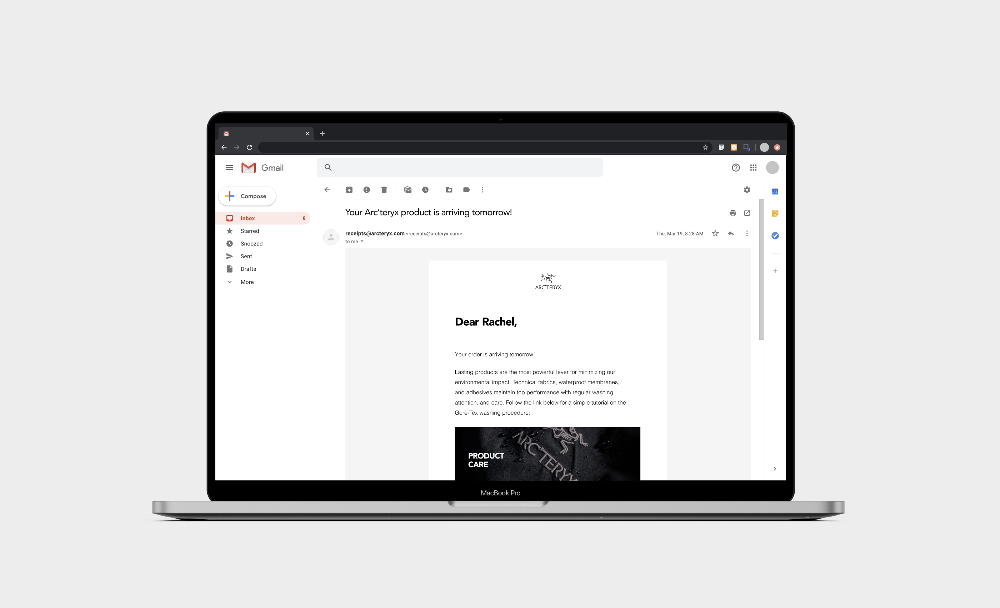
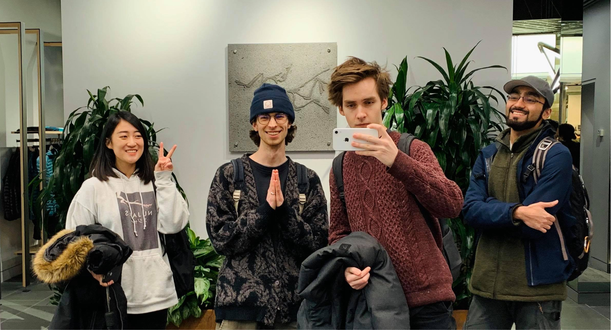

For a senior interaction design course at Simon Fraser University, our team was tasked with seeking a local organization in Vancouver whose values we shared. Arc'teryx’s philosophy as a design company and commitment to sustainability resonated with our team, and we had the pleasure of collaborating with the Kitsilano and Metrotown branches.
Conducted on-site ethnography, user research and interviews, and led the visual design of presentation slides. Designed and prototyped online experience of receiving product care gifts. Facilitated remote co-design workshop and design sprints. Designed, ideated and illustrated product care gifts.
Through interviews and ethnography, it was discovered that Arc'teryx customers, especially online customers, are unaware of proper product care for their garments. Customers have misconceptions that Arc’teryx’s reputation for great quality and high price point means that garments do not need care.
Customers are better equipped with product care knowledge through an ecosystem of physical and digital artifacts that brings delight to a familiar post-purchase shopping experience.
Their sustainability goals are met with fewer replacements and creates confidence that product care education takes place.
There is trust that their Arc’teryx garments will last a lifetime with regular care.
Arc'teryx customers are able to choose a free product care Magnet or Bandana upon purchasing an item, online or in-store. Gifts are provided to add delight into the purchasing experience and make product care knowledge easily accessible in every customer’s home.
For Arc’teryx, the short-term loss of fabricating these gifts with recycled materials can lead to long-term gains with brand loyalty, trust, and sustainability.
Right before online customers receive their product, an email is sent with product care information. Although it’s exciting to use a new product, it's recommended to wash the jacket before use to increase the longevity of the waterproof material.
While Arc’teryx product guides educate people in-store, we identified an opportunity to design for online customers after discovering that there are no current product care touchpoints when ordering garments on the Arc'teryx website.
Designed to live in the laundry room or closet, the magnet is a product care guide made from Gore-tex scraps. The back of the grommet is magnetic, so people can stick it on their laundry machines. The hole allows people to hang the magnet on hangers or hooks.

The bandana has product care instructions written on one side with patterns that feature local Vancouver trails. This portable artifact was designed to be used daily for people adventuring in the city or nature, and acts as a reminder to wash Arc’teryx garments.
There was no brief. Our team had to do the research, seek a problem, and design an intervention for that area.
We started with ethnographic research by visiting and observing each store across the lower mainland to understand their unique programs. During hour-long sessions of undercover browsing, we took field notes, photos, and conducted interviews with product guides regarding customer-employee interactions.
We conducted 8 qualitative interviews seeking to understand motivations, behaviors, and rituals. Our interviewees consisted of athletes, outdoor enthusiasts, urban commuters, techwear fans, and casual shoppers.
Our interviews also confirmed that customers care for their garments in unconventional and potentially damaging ways, listening to advice from friends and family.
With the data from our interviewees and the help of Arc'teryx employees, we mapped common journeys that customers may take, from their first connection with Arc’teryx, to active garment use, and eventual replacement.
Yea, our experience map is huge, so click here to view the PDF instead!
Discrepancies between Arc’teryx’s expectations and customer patterns confirmed for us that there is an opportunity to further leverage the current touchpoints.
Arc’teryx expects customers to have consulted product care resources, and to perform maintenance on garments as needed after purchase.
Customers avoid washing and drying, fearing it may damage their garment.
Arc’teryx expects product care education to take place in-store, during the sales process.
Customers leave the store having forgotten product care information.
The Arc’teryx website has product care information for customers to find.
Customers don’t seek product care information.
We quickly understood that a post-purchase intervention, communicating the importance of product care, would renew trust in Arc’teryx’s lasting quality, and help Arc’teryx achieve sustainable goals.
The patterns in our research ultimately led to framing our design question as:
I helped facilitate a 1h 30min online workshop (quarantine style) using Miro to better understand the wants, needs, desires and feasibility of ideas for an intervention. In this workshop we better understood the lens of product care through Arc'teryx employees. Together we did activities like Visual Toolkit, Mashup, Spider, Crazy 8's and made a journey map.
— Ron Wakkary, our professor.
Over the course of a few weeks, we came up with over 100 online and in-store 100 ideas, with each intervention tackling product care in its own way. I facilitated some design sprinting, design thinking, and sketching activities as well as held spontaneous ideation sessions on our figma board.

Our team's process throughout this project was never linear, it was constantly diverging and converging from critiques and meetings with Arc'teryx, our peers, and ourselves. We often struggled to pick a direction to pursue, like deciding which one of the hundreds of artifacts would be the most beneficial for the customer and Arc’teryx. I learned that when designers have the power to shape experiences and direct people's behaviour, we should do it in a way where they can respond. Together, we aimed to create a supportive experience that consisted of artifacts that fit a variety of lifestyles, chosen by customers.
